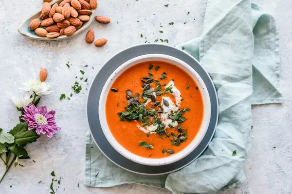
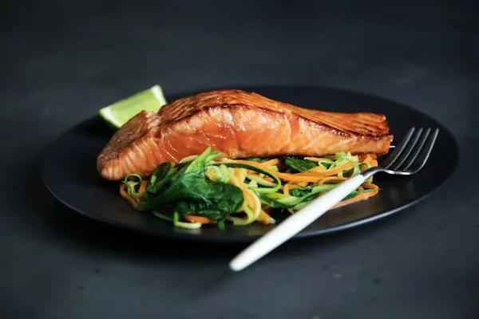
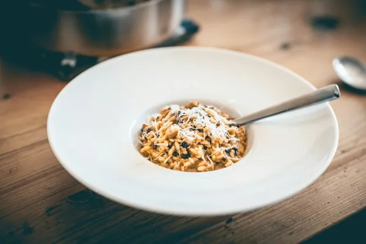
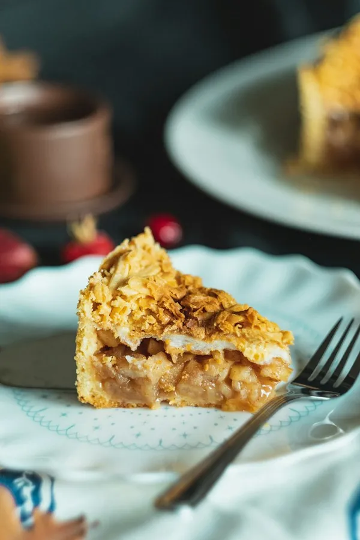
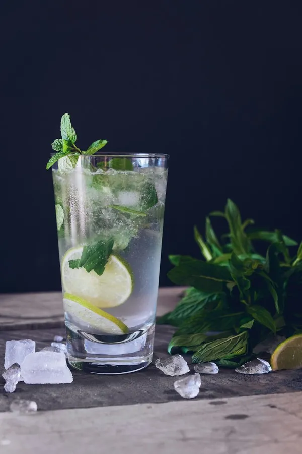

Salade Fraîcheur & Burrata
18 DTBurrata crémeuse, mesclun de salade, tomates séchées, pignons toastés et vinaigrette balsamique.
Cuisine de saison faite maison avec passion, de l'entrée au dessert.
Burrata crémeuse, mesclun de salade, tomates séchées, pignons toastés et vinaigrette balsamique.

Crème de potimarron onctueuse, graines de courge grillées, pointe de muscade et croûtons dorés à l'ail.
Fines lamelles de courgettes et radis croquants, copeaux de parmesan affiné et huile d'olive vierge au citron.

Cœur de faux-filet grillé minute, mousseline de pommes de terre fumée et réduction au romarin sauvage.

Saumon d'élevage durable cuit à l'unilatérale, julienne de légumes de saison glacés et sauce hollandaise légère.

Riz Carnaroli lié au mascarpone et parmesan 24 mois, poêlée de cèpes persillés et filet d'huile de truffe.
Volaille fermière élevée en plein air, jus réduit au thym, carottes fanes rôties et champignons de Paris.

Gâteau tiède pur cacao, cœur chocolat chaud onctueux, brisures de noisettes et crème anglaise vanillée.

Pâte feuilletée croustillante dorée au sucre roux, fruits frais rôtis, crème légère au mascarpone.
Feuillantine pralinée, mousse au chocolat noir aérée et zeste d'orange bio confit.

Citrons jaunes pressés minute, sirop de sucre de canne artisanal, eau gazeuse et feuilles de menthe fraîche.
Sélection de thés verts biologiques d'exception, menthe poivrée ou infusion verveine-agrumes au miel.